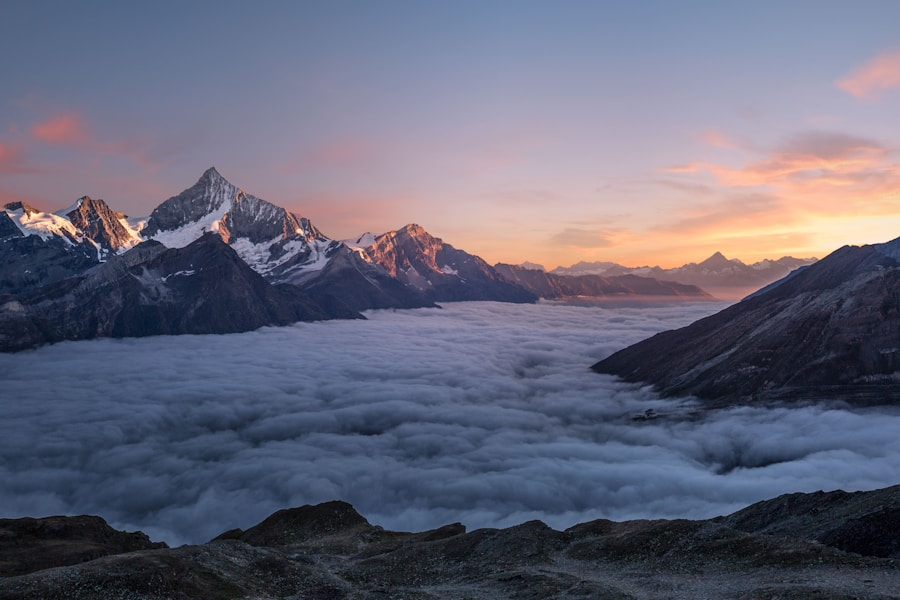
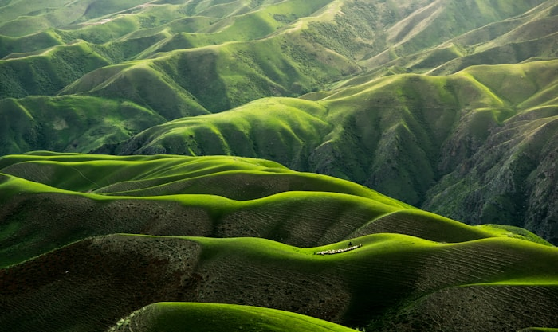
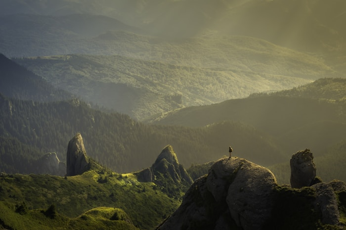

Naturaleza · Silencio · Contemplación
01 — Galería



02 — Documental
La naturaleza no se apresura y sin embargo todo se logra. El hombre que se sienta a contemplar la montaña no pierde el tiempo: aprende la paciencia de las rocas, la constancia del viento y la indiferencia sublime del cielo ante las urgencias humanas. Solo quien ha aprendido a escuchar el silencio sabe verdaderamente lo que es el ruido, y solo quien ha mirado el horizonte sin nombre comprende por fin cuán pequeño es todo aquello que creía importante.
Infraestructura
Apache HTTP Server
Balanceado por Nginx · Caché activada